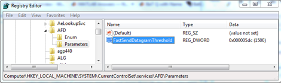

MTU is larger than the FastSendDatagramThreshold
Problem
You may see a message similar to the following on Windows machines
when using the Support Package for USRP® Radio Rx or Tx System
objects or blocks:
The MTU (1472) is larger than the FastSendDatagramThreshold (1024)!
This will negatively affect the transmit performance.
See the transport application notes for more detail.
Back to Top
Possible Solution
The Ettus ResearchTM web site has a document, UHD
- Transport Application Notes, that describes this problem.
See the Microsoft® web site: Optimizing
Windows Media Services for Appendix E: Registry Keys for information
on increasing this setting. After you have perused these documents,
follow the instructions in this section to apply the change.
Warning
Incorrectly editing the registry may severely damage your system.
Before making changes to the registry, you should back up any valued
data on the computer. |
To increase the FastSendDatagramThreshold , follow these steps:
Click Windows Start. Enter regedit in Search
programs and files.
Using the left side navigation window, go to HKEY_LOCAL_MACHINE\System\CurrentControlSet\Services\AFD\Parameters\.

Right click on Parameters and
select New > DWORD
(32-bit) Value.
Enter FastSendDatagramThreshold as
the name.

Right click on the FastSendDatagramThreshold value
and select Modify.
Enter 1500 for Value
data. SelectDecimal as Base
value.

Click OK. FastSendDatagramThreshold
should now have the following settings:

Close the registry editor. A system reboot is recommended
after the registry key change.
Back to Top
 | Troubleshooting |
USRP, UHD, and Ettus Research are trademarks of National Instruments Corp.
© 1984-2013 The MathWorks, Inc.